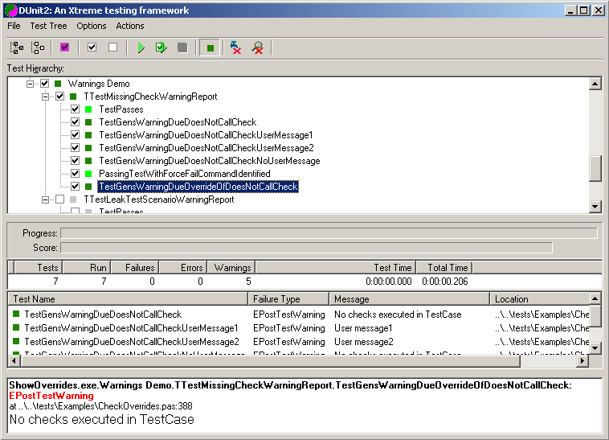
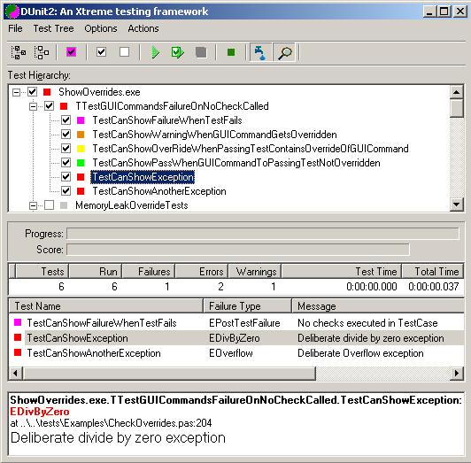
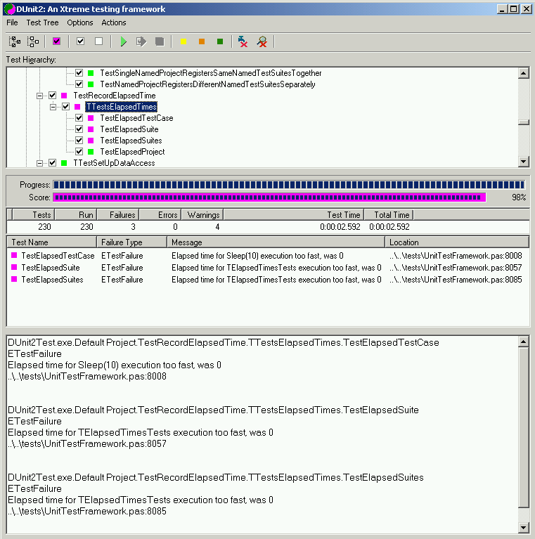
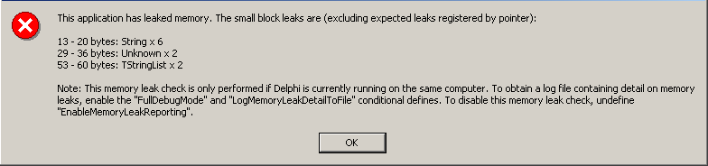
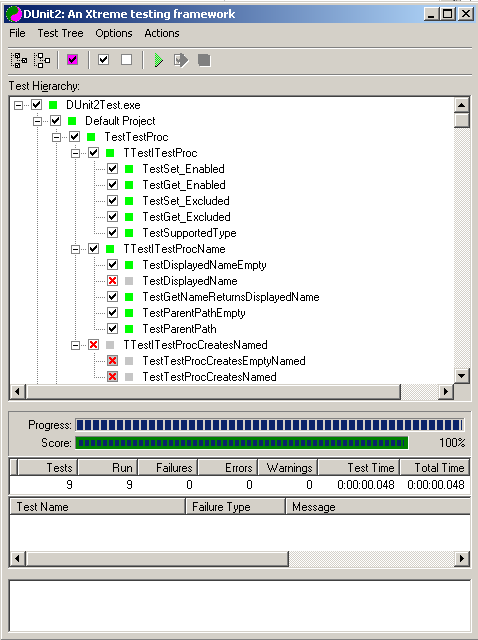
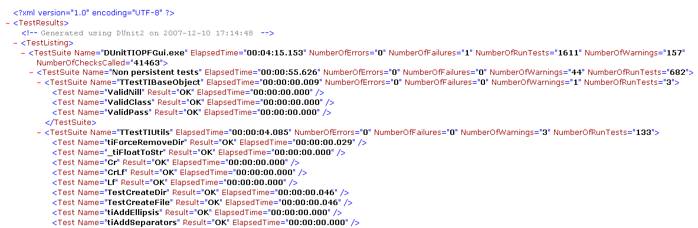
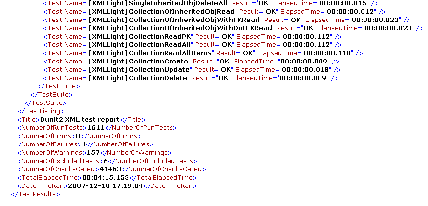

Advanced high integrity fpTest/DUnit2 description.
Table of contents
Introduction
FPTest is a fork of the DUnit2 project, and further adapted for the use
with the Free Pascal Compiler and Lazarus or fpGUI Toolkit. The original code was
created by the late Peter McNab. He single handedly added some excellent
features to DUnit2 and used the extensive test suite from tiOPF as his
playground.
For brevity the new code will be called DUnit2.
In both DUnit and DUnit2, unit tests comprise classes derived from
TTestCase, each containing 1 or more published test procedures as shown
in the example below. TTestCase is now an interfaced object.
type
TTestMyComms = class(TTestCase)
published
procedure VerifyThatThereIsAnUnAssignedCommPort;
procedure VerifyThatTheCommPortOpens;
procedure VerifyThatTheCommPortCloses;
end;
Through the magic of RTTI or .NET Reflection DUnit is
able to execute the published test procedures in an orderly fashion.
Code written into test methods performs tests on user's code and calls
one or more Check() procedures to signal pass or fail to the test
framework.
SetUp and Teardown
FPTest implement SetUp and Teardown procedures. These execute at run-time
before and after every test method respectively, providing an excellent
means to pre-initialize testcase specific data, objects, connections
etc and clean up the mess after each method. SetUp and Teardown execute
regardless of exceptions within any test method.
Expanding the TTestCase class to include SetUp and Teardown procedures is simple as shown below.
type
TTestMyComms = class(TTestCase)
private
// Your field variables here
protected
procedure SetUp; override;
procedure Teardown; override; // Close the Comm port here
published
procedure VerifyThatThereIsAnUnAssignedCommPort;
procedure VerifyThatTheCommPortOpens;
procedure VerifyThatTheCommPortCloses;
end;
SetUp and Teardown optional procedures provide a convenient means
to initialize variables, grab and release resources etc. However when
multiple test methods are defined and the operation involves slow
processes, like dialing modems, execution can slow unacceptably. Test
times can be reduced significantly if the slow process is executed once
and pre-established values maintained for the entire test duration.
Test writers sometimes attempt to overcome the slowdown by putting the
initializing code into the class constructor. In DUnit up to V9.4 this
approach is flawed for the reasons shown below.
Constructors and Destructors
In DUnit up to V9.4
each test procedure is implemented by creating individual instances of
the defining TTestCase. As a consequence, the constructor runs for
every defined test method. When the test suite is registered during
initialization this activity occurs before the GUI opens. If the class
utilizes a unique resource, global variable or grabs substantial
amounts of memory then tests often fail inexplicably.
The classic problem of placing code in the constructor might look like the following.
type
TTestMyComms = class(TTestCase)
private
protected
procedure SetUp; override;
procedure Teardown; override;
published
procedure VerifyThatThereIsAnUnAssignedCommPort;
procedure VerifyThatTheCommPortOpens;
procedure VerifyThatTheCommPortCloses;
// Don't expect this to work properly in existing DUnit code
public
constructor Create(const CommPortNo: integer);
destructor Destroy; override;
end;
All constructor action takes place before the GUI fires up, so
exceptions can force the application to close prematurely and sometimes
fatally leak resources.
Similarly, unless all object references get set to nil in the TTestCase destructor exceptions will occur during program closure.
There are still occasions when it would be really advantageous to be
able to initialize say a database connection once and hold it for the
entire duration of the test framework execution. There are "complex"
ways to achieve the effect but the methodology is not standardized
across unit testers.
DUnit2 Constructors and Destructors
DUnit2's design has
been improved, so the TTestCase constructor and destructor only runs
once for each registration of the class. Consequently, in DUnit2
allocating resources in a once off operation becomes standardized, more
visible and safer to implement. Care is still required however because
creation and destruction still occurs outside the GUI existence.
SetUpOnce and TeardownOnce
DUnit2 introduces two new protected
procedures "SetUpOnce" and "TeardownOnce". These significantly simplify the
process of writing efficient unit tests and overcome the need to associate
decorators and decorated tests. An added bonus is the absence of additional text
and nodes in the GUI display. DUnit2 handles and reports exceptions in these
procedures appropriately. Field variables are common to all procedures in the
class, reducing code complexity and maintenance.
type
TTestMyComms = class(TTestCase)
private
// Shared variables go here
protected
procedure SetUpOnce; override;
procedure SetUp; override;
procedure Teardown; override;
procedure TeardownOnce; override;
published
procedure VerifyThatThereIsAnUnAssignedCommPort;
procedure VerifyThatTheCommPortOpens;
procedure VerifyThatTheCommPortCloses;
end;
Test Decorators
Pattern aware DUnit author(s) provided a less convenient solution in V9.4 by introducing test "Decorators".
To utilize a test decorator requires the coder to write a derivative
class of TTestDecorator which also gets registered at initialization
time. It contains just a SetUp and Teardown procedure. The following is
an example.
type
TMyTestDecorator = class(TTestDecorator)
private
protected
procedure SetUp; override;
procedure Teardown; override;
end;
In the initialization section I think the registration is supposed to look something like the following.
initialization
RegisterTest(TMyTestDecorator.Suite('Optional Name', TMyDecoratedTests.Suite));
end.
When the test suite is executed TMyTestDecorator's SetUp procedure executes once before any code in TMyDecoratedTests.
Similarly TMyTestDecorator's Teardown procedure executes after the last Teardown in TMyDecoratoratedTests
The simplicity of use eludes many, perhaps because there were few clear
examples in the earlier DUnit documentation. The test decorator class
solves the problem of having to set up and tear down code whenever the
process only needs to be done once for a particular test case instance.
For test writers the main problem is that field variables in the
decorator are not easily shared with the decorated tests class. When
multiple decorators are required there is no natural association to
help keep track of which decorator class goes with which test case
class.
Implementation of tests decorators in DUnit2 is straight forward.
Decorator classes can continue to inherit from TTestSetup to gain
access to GetName read or change the new DisplayedName property. Both
classes register in the same manner as V9.4 DUnit2 test decorators can
be nested to any depth but the issue of sharing variables still exist.
Decorators can now register multiple test cases simultaneously thus:
initialization
RegisterTest(TMyTestDecorator.Suite('SuiteName' , TMyDecoratedTests.Suite, TMoreDecoratedTests.Suite]));
end.
This improves the versatility because each contained
TTestCase can use their own SetUp and TearDown procedures as required.
In addition decorators can be nested in various ways:
RegisterTest(TTestTheDecorator.Suite('XXX',
TestAnotherDecorator.Suite('YYY',
TTestTheDecorator.Suite('ZZZ',
TTrialDecoratedTest.Suite))));
RegisterTest(TTestTheDecorator.Suite('XXX',
[TTrialDecoratedTest.Suite,// This is just an ordinary test
TTestAnotherDecorator.Suite('YYY',
[TTrialDecoratedTest.Suite,
TTestTheDecorator.Suite('ZZZ',
TTrialDecoratedTest.Suite)])]));
Data sharing between decorators and test cases
DUnit V9.4 and prior
needed to declare data for initialization by test decorators in common
view of the decorator and decorated class definitions, usually as one
or more global variables in a shared unit.
DUnit2 has a new approach which keeps the data lifetime within the project's execution path.
To share data, even among disparate unit tests and
interface deriving from ITestSetupData is defined and need only contain
setters, getters and temporary storage. This is illustrated in sample
code below provides a means to share a string reference.
ICheckTestSetUpData = interface(ITestSetUpData)
['{8C61F458-86B5-4CD0-BF26-5366D28980CB}']
function get_SetupData: string;
procedure set_SetupData(const Value: string);
property SetupData: string read get_SetupData write set_SetupData;
end;
Now for the concrete class implementing the above interface.
TSetupData = class(TInterfacedObject, ICheckTestSetupData) < BR > private
FSetupData: string;
function get_SetupData: string;
procedure set_SetupData(const Value: string);
published
property SetUpData: string read get_SetUpData write set_SetUpData;
end;
At an appropriate
point in the test suite execution an instance of the above class would
be created, populated and it's reference stored in the execution
control object's "TestSetUpData" variable. Before each test case
executes the execution control object stores a reference to the above
interfaced object in the test case's own TestSetUpData property. This
gives test methods access to information prepared elsewhere. Data
updated by test methods can also be passed back up the execution chain.
Finally the reference is automatically set to nil as
each project terminates, so there should be no data leakage outside
projects.
Overrides
DUnit V9.3 introduced the concept of "Post Execution Failures".
There are two possible causes.
- If test methods do not execute at least one call to
Check() then the test may not indicate a test actually failed. A GUI
global menu option "Fail TestCase if no checks executed" can be enabled
so test methods which have not called Check() will fail.
- Memory leak detection has a corresponding menu
option and the amount of memory leaked gets shown in the resulting test
failure report.
These soft failures increase the usefulness of tests
and raise the level of test integrity. Some tests however may generate
memory leaks by virtue of calling leaky code outside the coder's
control. Sometimes such soft test failures might not be considered
failures of the tested code. Memory leaks of known size can also be
programmed to pass while allowing leaks of any other size to raise a
failure.
Similarly, some tests might not be programmed to call Check() because
the tested code only needs to execute without raising an exception to
be considered a pass. Boolean properties can be set during the test
method execution to suppress post test failures, overriding the GUI's
global command.
"Overrides" was the count of tests set to suppress display of post execution failures.
Note that potential post execution failures are not detectable or even
show in V9.4 if they aren't armed to fail. Consequently testers may not
be alerted to latent code problems.
Warnings
DUnit2 advances test
integrity by automatically detecting potential failures. DUnit2
replaces V9.4s Overrides display with "Warnings". This now presents the
sum of potential post execution failures and overrides.
The value has no meaning until the tests are executed.
The location of warnings can now be displayed. See image below.

Showing tests which must never leak -or- must always call Check().
Some tests, usually those testing the interaction of classes or
those relying on externally prepared test data can become complex.
Tests that contain either if, case or {$ifdef condition} statements
that may have data dependant execution paths which accidentally bypass
all calls to Check().
Similarly an unexpected memory leak in some tested code might be deemed
critical and need to fail even if memory leak detection is turned off
globally.
The test writer can place statements in either SetUp or the test method:
FailOnNoChecksExecuted := True;
or
FailsOnMemoryLeak := True;
To discover which tests contain these statements the user runs the tests with just the yellow button selected.
Yellow - indicates which tests contain statements overriding the GUI, that have not failed.
As mentioned above, in both V9.4 and DUnit2 the tester can choose to
override the GUI global commands so specific test methods don't fail on
soft failures. DUnit2 adds yellow and orange node colours to identify
tests where run-time properties have overridden the GUI.
Yellow - indicates which tests contain statements overriding the GUI, that have not failed.
Orange - indicates which overridden tests would have failed.
Neither show in the TestTree display if run-time properties have not been used.
"Warnings" will however still have a count of the potential failures.

Summary Level Checks (early exit on pass)
Within test methods it is not uncommon to have a sequence of specific checks culminating in a definitive pass/fail check.
An example could be a series of tests which validate individual aspects
of a regular expression evaluator followed by a demonstration of all
aspects combined.
There are times where test suite execution times would benefit from
executing the summary level test first and if it passes then skip the
detailed level checks.
Conversely, if the summary level test failed then all the summary level
checks should run. If they all pass only the initial failure would be
reported.
DUnit2 now provides a means to execute a summary level check and if it passed the remaining checks are skipped.
A single boolean check "EarlyExitCheck(boolean check result, 'Error message'); is now available for use.
Tests following a "EarlyExitCheck() statement execute when the summary level check fails.
Selecting "Inhibit Summary Level Checks" reverses the behavior of the EarlyExitCheck so the following checks run on pass.
Summary level checks are only available within test methods and do not extend to the TTestCase level.
Error Reporting
When an error or test
failure occurs DUnit2 now reports the whole test path from the top
level node down to the individual method name. See image above.
In all DUnit versions (D5..D10) when USE_JEDI_JCL is defined in project
- options - conditionals, if the linker includes the .map file the
source code line number location is displayed. In DUnit2 if the map
file was not linked a message to that effect appears next to the error
address.
Individual or selected parts of error messages can now be copied to the clipboard using new GUI menu options.

Additionally all the error messages pertaining to a Treeview node can
be viewed in the ErrorMessage window. Clicking on the top level project
node shows all of the error messages

Optional Leak Report on Shutdown
When compiled with
FastMM4 DUnit provides an optional detailed leak report on shutdown.
This has been configured to require Delphi to be running. See images
below.
 FastMM4's Shutdown Leak Report
FastMM4's Shutdown Leak Report

DLL Test Suites
Test suites can now be
compiled into a DLL and registered and executed in the same manner as
conventional unit tests. There was a similar non obvious functionality
in the previous DUnit. DLLs each register as separate Projects using
their filename.
The purpose is to allow groups of separately prepared unit tests to be
gathered on one machine and executed under the same test scenario. So
one DLL might be compiled with Optimisation ON and another with Align
Records ON etc. DLLs compiled under D7 executed correctly when run
under D10. (BDS2006)
TestFrameworkProxy
DUnit2 has been
developed from the lowest level back towards the GUI, with the eventual
aim of rewriting the middle and upper layers to support multi-threaded
testing. The GUI of course will always run in the VCL thread. To
facilitate early testing and not break too much code, particularly
other people's tests an intermediate object class has been introduced
to marry the new and old as code.
An object tree structure of ITestProxy is interposed between the
GUI/Test test runners and the new DUnit core. Consequently the GUI
never sees the real ITests or ProjectsManager. This extra layer
undoubtedly slows execution, but not to any detrimental degree.
GUITestRunner and TextTestRunner
GUITestRunner and
TextTestRunner have been modified to use a new ITestProxy class and a
modified version of TTestResult. TTestResult has been changed to an
interfaced object and most executable code pruned out. The method of
initiating test execution has changed slightly which necessitated
changes to both test runners. Other slight changes stem from the way
test results are propagated back to the GUI. TestListeners are still
used as before.
Speed of execution
During the process of
analyzing the original DUnit's inner workings to add leak detection one
aspect of the execution flow became obvious. TTestResult was repeatedly
visiting then being visited by the execution flow in a very hard to
follow manner (well for me, not necessarily for the initial writers).
One consequence was that memory leak detection code had to execute
multiple times for each test method.
Another point of code inefficiency involves reporting status back to
the GUI after every test. The existing DUnit code unnecessarily
refreshes the TestTree right back up to the highest node for every test
regardless of whether there will be any status change. DUnit2 only
ripples necessary changes back to the higher levels.
Normal displayed unit testing times show very little difference between
the new and old code. However there is a significant speed increase
when conducting repeat tests. 10000 loops calling Check(True) from a
RepeatTest decorator in older DUnit takes 145 secs compared with only
38 secs in new DUnit2. Efforts to improve code efficiency are paying
dividends, albeit in an infrequently used aspect.
One unexpected speed improvement occurs when executing TextTestRunner
on a complex project's suite of tests (1200+) such as tiOPF2. The new
tests begin execution approximately 4 seconds earlier.
Prior to test suite execution DUnit2 builds a linear list of ITest
references in each TestProject for rapid access at runtime. The list is
is now scanned sequentially rather than code reccursing into a tree
structure. Calls back to the TestTree to check each node for enabled
status have been replaced but other Listeners are still polled.
Compatibility
For simple projects the
main .dpr just needs to name GUITestRunner or TextTestRunner as before.
The project paths should be pointed to the new code src folder or DCU
set. Similarly, most unit tests still only need to refer to
TestFramework.
TTestResult class definition had been hidden from external access
and a function GetTestResult now returns an interfaced object version
instead. So, for those specialist test suite writers who directly
access TestResult data need to call that function to get a reference.
The variable is now an interface type which should to be set to nil
instead of calling .Free. Nothing major.
Similarly, TTestFailure has been upgraded to being an interface and no
longer requires a call to .Free to clean up each instance.
Existing unit tests are still register as before. e.g. :
Registertest(TMyTestCase.Suite);
Registertests('MyNamedGroupOfTests', [TTestCaseABC.Suite, TTestCaseXYZ.Suite]);
Registering multiple test in the same named TestSuite will
display the tests together in the TestTree view and their execution
will be sequential.
Legacy Unit Test Suites.
Some "legacy" unit tests with complex test scenarios have not been
converted to using interfaces yet and may so not compile because the
required TTestCase methods are not public. As an aid, All Check() and
Fail() methods have been made public. In addition TAbstractTest
definition has been re-added to the code and represents an ITestProc. A
parameterless RunTest method has been added.
Creating TTestCase instances within test methods
Unit test writers who
create instances of TTestCase on the fly (now an interfaced object)
need to change variable definitions from TTestCase to ITestCase.
Naturally one should not call .Free when their useful life has passed.
Either set the reference to nil or let them die by Delphi magic.
Perhaps more noticeable is that the constructor for TTestCase instances
no longer needs a string parameter. In all the unit tests I have
encountered these have all been empty i.e.
FMyTestCase := TMyTestCase.Create('');
becomes
FMyTestCase := TMyTestCase.Create;
Note. DUnit2 now allows creating TTestCases with an empty string.
TTestCase can be inherited from and additional characteristics added.
New classes also need to override the appropriate constructor(s) to
ensure proper registration. Adding once off setup operations in these
constructors is now possible although it has disadvantages compared
with using SetUpOnce.
TTestCase instances created on-the-fly should be allocated to a local
or field variable and should not be registered. Code can be executed by
calling LMyTests.Run(AnIExecControl) where AnIExecControl is a local
instance of an ITestExecControl. For the following code to compile an
additional unit "TestFrameworkIfaces" may need to be added to your unit
test's uses clause.
interface
uses
TestFrameworkIfaces,
TestFramework;
......
implementation
procedure TMyTestCaseRunner.VerifyMyEmbeddedTestCasePasses;
var LMyTestCase: ITestCase; // Might need to be TMyTestCase in .NET
LExecControl: ITestExecControl;
begin
LExecControl := TestExecControl;
// Get ref to new instance of a TTestExecControl
LMyTestCase := TMyTestCase.Create;
Check(LMyTestCase.Run(LExecControl) = _Passed, 'Oh damn, it failed');
// No need to destroy the local vars, they are interfaces and Delphi does it for you
end;
Providing partial V9.4 compatibility
Some users add functionality to DUnit that was not anticipated during it's initial design.
To aid this process the following changes have been incorporated.
Crafted unit tests can now be executed by calling RunTest instead of defining a test method.
The first step is to define a new type inherited from ITestProc or for Legacy code TAbstractTest.
In the class definition override RunTest and place the test code and Check() or Fail() therein.
The constructor can accept a string which does not have to conform with Delphi method names.
Note, there can only be one RunTest method defined per class.
RunTest does not take TTestResult as a parameter and is not called from TTestResult.
At run time create an inherited empty instance of TTestCase and add one or more of the above TTestProcs.
Register the containing TTestCase in the normal fashion.
type
TMyRunTestExample = class(TTestProc) //-or- (TAbstractTest) if it's existing code
public
Procedure RunTest; override;
end;
TMyRunTestRunner = class(TTestCase)
// Empty but can have SetUp, TearDown procedures if desired
end;
......
TMyRunTestExample.RunTest;
begin
// Do something useful
Check(SomeBooleanResult, 'My error message');
end;
......
var
LTest: ITestCase;
initialization
LTest := TMyRunTestRunner.Suite;
LTest.AddTest(TMyRunTestExample.Create('A funny !! name');
RegisterTest(LTest);
Notable design changes
- The TestResult object has been replaced at the low
level by an interfaced object TTestExecControl which contains property
getters and setters.
- The interface definitions start at the basic ITest - and progresses through to ITestProject.
- When TTestCase instances are registered only one instance is created and test methods each spawn an ITest instance.
- ITestSuite represents a visibly named group of ITestCases, the same as in V9.4.
- Above ITestSuite are ITestDecorator IRepeatTest and ITestProject.
- ProjectsManager looks after the registration of all tests and is hidden from casual view.
- Execution paths have been straightened out considerably.
- The requirement for TAbstractTest has been superseeded.
- All test method names need to be legitimate
Delphi procedure names. However during test registration their
displayed name can be manipulated if necessary. An example of this
occurs in the tiOPF2 test suite where test procedure names are prefixed
with the database type under test.
- There are two additional Check() procedures for comparing Int64 values as well as the new EarlyExitCheck() capability.
- An XML Reporter has been added to provide a viewable report for web page deployment.
- Individual tests can be excluded from execution by the inclusion of identifying information in the DUnit.ini file.
- 2 buttons have been added to the GUI to show Memory Leak and Checkless test option status.
- buttons have been added to the GUI to select post execution TestTree display functionality.
Project Registration
Existing unit tests
suites appear in the TestTree in exactly the same manner as V9.4. The
root node is assigned the project executable name and tests follow in
order of registration. Tests registered in named Test Suites however
are grouped together, regardless of registration order as in V9.4.
To segregate tests for execution in separate threads (future work) a new inherited type "ITestProject" has been introduced.
When more than one project is registered test cases not specifically
register to a named project are relegated to a project called "Default
Project". The TestTree becomes:-
ProjectName.exe - Default Project
some test cases
FirstNamed Project
some more test cases
SecondNamedNamed Project etc.
even more test cases
A suite of tests can be compiled into a DLL and registered using unit "TestModules.pas" procedures.
DLL based tests show in the TestTree as a project using the DLL name.
At some time in the future someone more familiar with .NET might like
to so the same for Assemblies. Registration is shown below.
RegisterModuleTests('Full path and dll filename.ext');
The syntax for registering tests in a project is simple. In unit
test unit's initialization section the registration code looks like the
following.
Register single test suite:
RegisterTest(TMyTestCase.Suite); //Automatically allocated to the "Default Project"
or
TestFramework.RegisterTest('RootNodeName', TTestCaseFirst.Suite);
Register 2 test suits with the same title:
ProjectRegisterTests('RootNodeName', [TTestCaseFirst.Suite]);
ProjectRegisterTests('RootNodeName', [TOtherTestCase.Suite]);
Register 2 test with different titles:
ProjectRegisterTests('RootNodeName_A', [TTestCaseFirst.Suite]);
ProjectRegisterTests('RootNodeName_B', [TOtherTestCase.Suite]);
Register multiple test suits at once:
ProjectRegisterTests('RootNodeName', [TTestCaseABC.suite, TTestCaseXYZ.Suite]);
Where RootNodeName becomes the name of the root node.
If multi-threading is
added to DUnit2 the default project will run in the context of the VCL
thread for maximum compatibility with existing code.
A simple demo of multiple registered
Projects is illustrated below.

Note that "MiniTestLibW32.dtl" is a suite of tests compiled into a dll, registered and executed along with ordinary tests.
FPTest Self Testing
Both V9.4 and DUnit2
use a global variable in memory to hold a reference to the registered
TestCases instances. DUnit2 test suite verifies this variable get
cleared on pseudo shutdown. Unfortunately this also deletes the running
tests themselves so a parallel set of essential DUnit code is invoked
in a separate Ref folder to execute the DUnit self tests. These
duplicate units are easily kept in sync with the deployed DUnit code
but have unit names starting with "Ref"
Define 'SELFTEST' in the project conditionals automatically invokes the
duplicate code. All DUnit self testing should be calling
RefTestFrameworks.RegisterTest(); to put the tests into the TestTree
view.
In code tests i.e. those being executed with registered tests need to be prefixed as:-
TestFramework.RegisterTest(MyTestedTests.Suite); to avoid a compile time ambiguity error.
TestFramework makes use of FastMM4 for detecting memory leaks and provide some speed improvement.
FastMM4Options.inc can be modified if specific options are deemed necessary.
The latest .zip of files uses FastMM4 rev 4.88 and the shipped FastMM4Options.inc
FASTMM should always be linked with the code, even on BDS2006.
The JEDI_JCL code can optionally be linked and provides stack tracing
and exception error reporting when the code is linked with it's .map
file. D5 through to BDS2006/7 support the library. It was necessary to
delete one reference in a uses clause for compilation under .NET.
When JEDI_JCL is armed to perform stack tracing the generated strings
acquire memory which the memory leak detection code flags as a soft
failure. Provision has been made in code to allow StackTracing to be
disarmed when memory leak detection is enabled.
DUnit2 Unit Test Suite
DUnit2 tests have been
written continuously since coding began. Many test methods extensively
validate the test itself before performing the final calls to Check().
This gives considerable confidence in the final result.
Once the low level TestFramework and TestFrameworkProxy harness was
validated a set of unit tests from an unrelated project were linked
with DUnit2 and executed correctly on the first attempt.
Exposure to tiOPF2 unit tests has been invaluable in teasing out
compatibility issues and managed to expose an untested aspect recently.
Naturally an additional unit test to capture the issue has been added
to the test suite.
Condensed view of unit tests executing 21st May 2007 showing the range of testing conducted.

Excluding Tests
- Individual tests can now be excluded separately from Enabling and Disabling tests.
- Excluded test state is persisted in DUnit.ini and is not cleared by globally enabling tests.
- To exclude a test in the GUI version right click on the test and choose Exclude Test Execution.
- To re-include tests right click on the test and choose Include Test Execution.
- Excluded tests are shown with a red X in the GUI test treeview.
- Excluded tests are stored in Sections in DUnit.ini and include the project name.
- To exclude the same tests from execution in
console mode duplicate the sections in the .ini file and change the
project name accordingly.
- In console mode (TextTestRunner) excluded tests are shown with an x in place of dots.
- After tests suite execution the XML report file shows the number of Excluded tests.

XML Report Generator
- An XML report generator has been added for D7..D10 but not .NET.
- D7..D10 automatically link to the supplied xdom.pas.
- To compile D5 or D6 xdom.pas would need to be
copied from a higher Delphi version and several compiler specific
$IFDEFs removed to include XMLListener.pas.
- The report format follows the style used by the tiOPF2 project.
- Reports are automatically created at the end of each suite execution.
- the .XML file is saved in the same location as the test executable.
- DUnit2 XML test results report. Note tag difference to tiOPF2 shown below
An example file running tiOPF2 tests is shown below in two sections, beginning and ending.


Closing summary
- DUnit2 appears very stable and largely compatible with existing standard test suites.
- The addition of SetUpOnce and TearDownOnce adds significant versatility.
- Testing integrity has been strengthened with potential soft failures detected automatically.
- Named projects provide a pathway for future improvements to run multi threaded unit testing.
- The test framework does not leak memory or resources.
- Decorated tests can be nested.
- Repeated tests execute significantly faster.
- TTestCase Constructors and Destructors only run once.
- New Int64 Check() procedures and EarlyExitCheck capability have been added.
- An XML report generator has been added (.NET excluded).
- Individual tests can be excluded from execution.
- The code is still undergoing refinement in particular to improve readability and maintainability.
Copyright
DUnit Group 2006, 2008
All rights reserved.